Gemeinschaft Chara · Lobpreis
Keys2Worship
Kurzanleitung für iPad & iPhone
Lobpreislieder auf dem Klavier begleiten – auch ohne Vorkenntnisse. Die App zeigt dir auf einer Klaviatur in echter Größe, welcher Finger auf welche Taste kommt, und lässt die Fingernummern im Takt zum nächsten Akkord gleiten. Die Akkorde werden so gelegt, dass sich deine Hand möglichst wenig bewegen muss.
Zum Blättern wischen, die Pfeile unten antippen oder die Pfeiltasten benutzen. Ca. 10 Minuten.
Überblick
Was die App kann
- Fingersätze auf der Klaviatur: farbige Kreise mit Nummern zeigen, welcher Finger welche Taste drückt.
- Kurze Wege: Die App wählt für jedes Lied automatisch die Akkord-Lagen, bei denen die Hand fast liegen bleibt.
- Gleitende Finger: Im Takt des Metronoms wandern die Nummern zur nächsten Taste.
- Echte Tastengröße: Die Tasten sind so breit wie an einem richtigen Klavier.
- Klavier oder Rhodes – du hörst jeden Akkord.
- Planning Center: Setlist des nächsten Gottesdienstes holen, mit Tonart, Tempo und – wenn gepflegt – Akkorden.
Alles läuft auf deinem Gerät. Nach dem ersten Öffnen funktioniert die App auch ohne Internet – nur Planning Center braucht eine Verbindung.
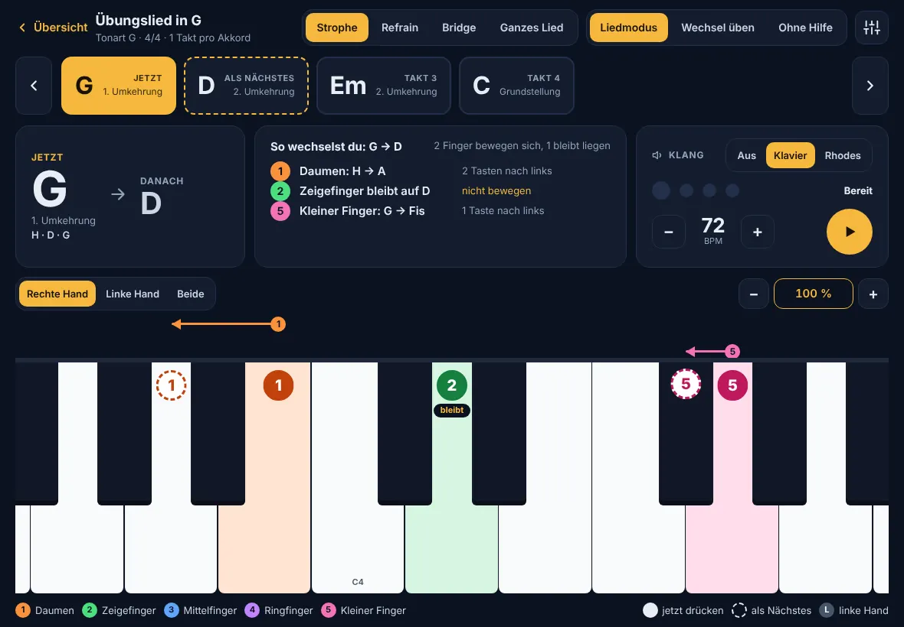
Einmalig
App installieren und Ton einschalten
- In Safari öffnen:
olivergentina.github.io/Keys2worship - Teilen antippen (Quadrat mit Pfeil) → Zum Home-Bildschirm.
- Die App über das neue Symbol starten. Der Schriftzug schreibt sich, dann Start antippen – das schaltet den Ton frei. Ein kurzer Akkord bestätigt, dass alles klappt.
Lautstärke am iPad hochdrehen. Nach längerer Pause zeigt die App den Startbildschirm erneut – einfach wieder Start antippen.
Neue Versionen lädt die App beim Öffnen selbst. Die Versionsnummer steht unten auf der Startseite und unter ⚙︎ → App & Speicher.
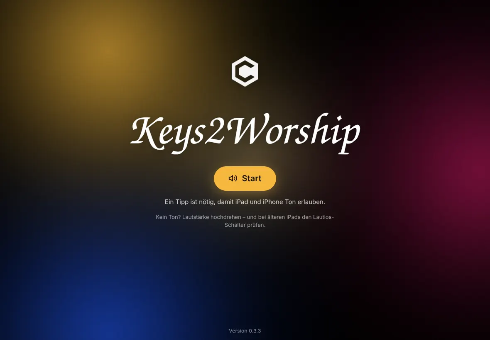
Grundlagen
Die Übungsansicht lesen
| Zeichen | Bedeutung |
|---|---|
| Voller Kreis | Diese Taste jetzt drücken. Die Zahl ist der Finger: 1 = Daumen, 2 = Zeigefinger, 3 = Mittelfinger, 4 = Ringfinger, 5 = kleiner Finger. |
| Gestrichelt | Hier landet der Finger beim nächsten Akkord. |
| Pfeile | Welcher Finger in welche Richtung rutscht. |
| „bleibt“ | Finger einfach liegen lassen. |
| L | Linke Hand: Grundton mit dem kleinen Finger. |
Die Zahlen stehen oben auf den Tasten – so verdecken deine Finger sie nicht. Oben siehst du die Akkordfolge, in der Mitte „Jetzt → Danach“ und in Worten, wie du wechselst.
Üben
Mit Metronom üben
- ▶ startet das Metronom. Jeder Akkord dauert einen Takt; auf der „1“ erklingt er.
- Auf dem letzten Schlag gleiten die Fingernummern zur nächsten Taste und kommen genau auf der „1“ an. Oben steht dann „Finger rutschen …“.
- Mit − / + neben der BPM-Zahl langsamer oder schneller werden. Klick schaltet das Klicken stumm – die Akkorde erklingen weiter.
- Ohne Metronom: › zeigt den nächsten Wechsel in Zeitlupe.
Übungsmodi
- Liedmodus: der ganze Teil (oder „Ganzes Lied“) der Reihe nach.
- Wechsel üben: nur zwei Akkorde im Wechsel – ideal für schwierige Stellen. Den ersten Akkord oben in der Leiste antippen.
- Ohne Hilfe: nur die Akkordnamen – teste dich selbst.
Unter ⚙︎ → Metronom & Gleiten kannst du die Finger 2 oder 3 Schläge früher losgleiten lassen. Das gibt am Anfang mehr Zeit.
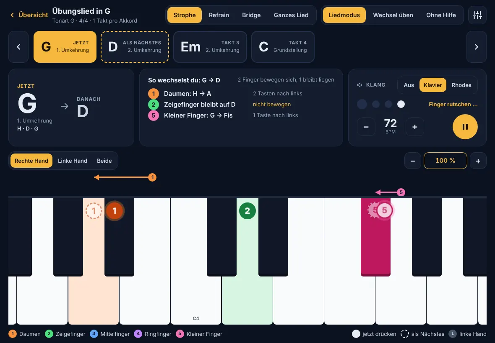
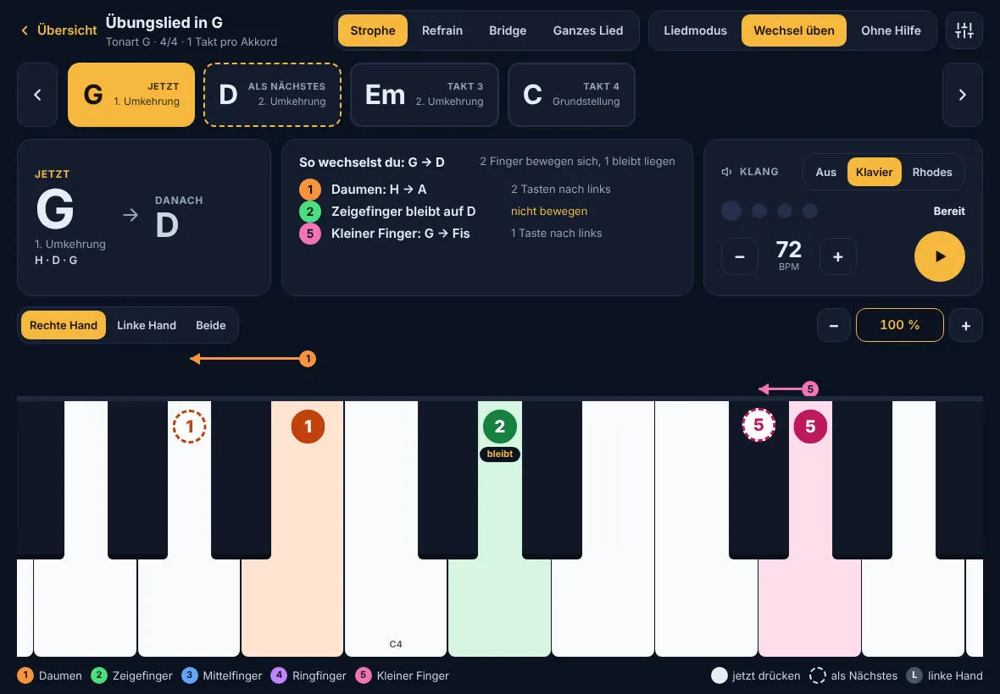
Klaviatur
Hand wählen & echte Tastengröße
- Rechte Hand – Standard. Tasten in echter Größe (100 %), der Ausschnitt läuft mit der Hand mit.
- Linke Hand – nur der Grundton, ebenfalls in echter Größe.
- Beide – die ganze Klaviatur. Das ist die kleinste Darstellung.
Rechts über der Klaviatur: − und + verkleinern bzw. vergrößern, ein Tipp auf die Prozentzahl springt zurück auf 100 %. Die App merkt sich den Zoom pro Ansicht. Der Ausschnitt steht während eines Lieds still – er wird einmal so gewählt, dass alle Akkorde hineinpassen.
⇕ Schwarze Tasten schaltet den Anpass-Modus ein: Die orange Linie (oder ▲ ▼) verschiebt, wo die schwarzen Tasten enden. Kürzere schwarze Tasten geben den Fingern unten mehr Platz. Nochmal antippen beendet den Modus.
Mehrere Finger auf der Klaviatur sind ein Akkord – deshalb ändert sich die Größe dort nie aus Versehen.
⚙︎ → Klaviatur → „Echte Tastengröße kalibrieren“: Bankkarte auf den Balken legen und mit −/+ gleich lang einstellen.
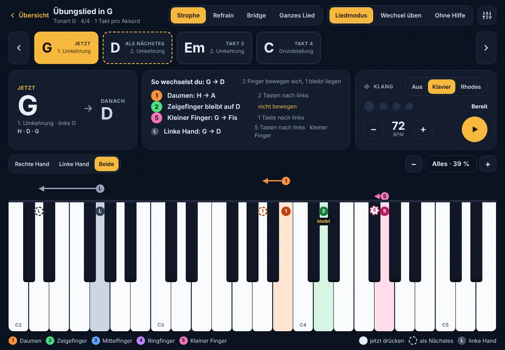
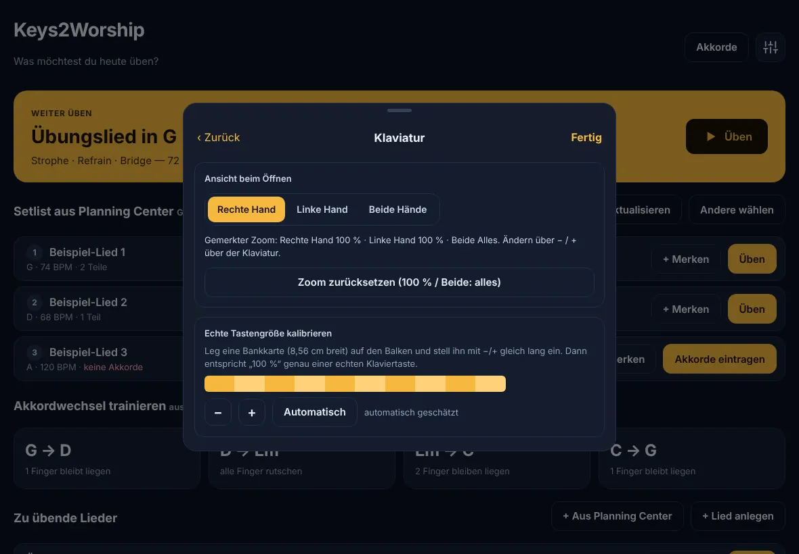
Lieder
Eigene Lieder anlegen
- Auf der Startseite + Lied anlegen.
- Titel, Tonart, Tempo und Taktart eintragen.
- Pro Teil (Strophe, Refrain, Bridge …) die Akkorde mit Leerzeichen eintippen:
G D Em C. Zwei Takte desselben Akkords:G*2. Basston:D/Fis. - Nicht erkannte Akkorde werden rot markiert.
- Speichern & üben.
Mit − / + bei der Tonart transponierst du das ganze Lied – C, G, D und A sind für den Anfang am leichtesten.
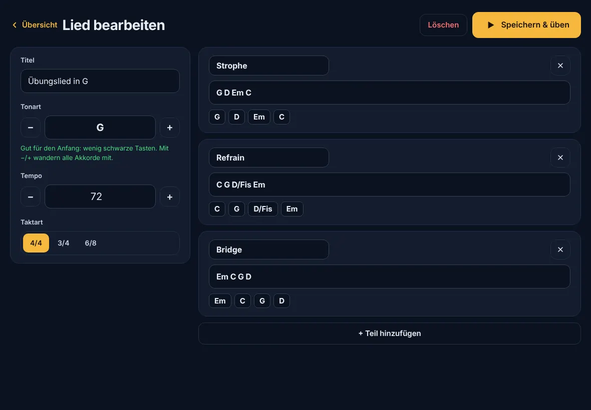
Planning Center
Mit Planning Center verbinden
- ⚙︎ → Planning Center → Mit Planning Center verbinden.
- Mit deinem Planning-Center-Konto anmelden und den Zugriff erlauben. Die App liest nur – sie ändert nichts.
- Du landest wieder in der App. Die Anmeldung hält ca. drei Monate.
Keys2Worship nutzt dieselbe Planning-Center-App wie AmbientPad. Bei dieser App muss unter Callback URLs zusätzlich eingetragen sein:https://olivergentina.github.io/Keys2worship/
(Planning Center → Developer → Applications). Die Adresse steht auch in der App unter ⚙︎ → Planning Center → Erweitert.
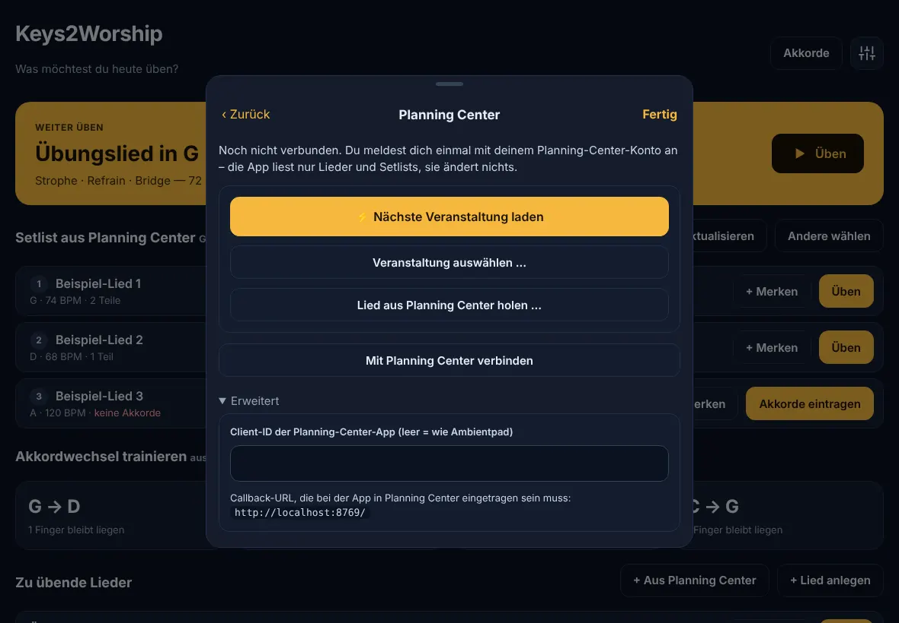
Planning Center
Setlist üben und Lieder merken
- Auf der Startseite ⚡ Nächste Veranstaltung laden – oder Veranstaltung auswählen … bzw. einen Link zu einem Plan einfügen.
- Die Lieder erscheinen unter Setlist aus Planning Center in der richtigen Reihenfolge, mit Tonart und Tempo.
- Üben öffnet das Lied. Oben kannst du mit ‹ › direkt zum vorigen oder nächsten Lied der Setlist springen.
- + Merken legt ein Lied dauerhaft in deine Liste Zu übende Lieder.
- Einzelne Lieder aus der ganzen Planning-Center-Datenbank: + Aus Planning Center → suchen → Arrangement wählen.
Aus „Lyrics & Chords“ des Arrangements in Planning Center. Sind dort keine Akkorde gepflegt (nur PDF), steht beim Lied „keine Akkorde“ – dann tippst du sie einmal mit Akkorde eintragen ein. Deine Version wird gemerkt und beim nächsten Mal automatisch verwendet.
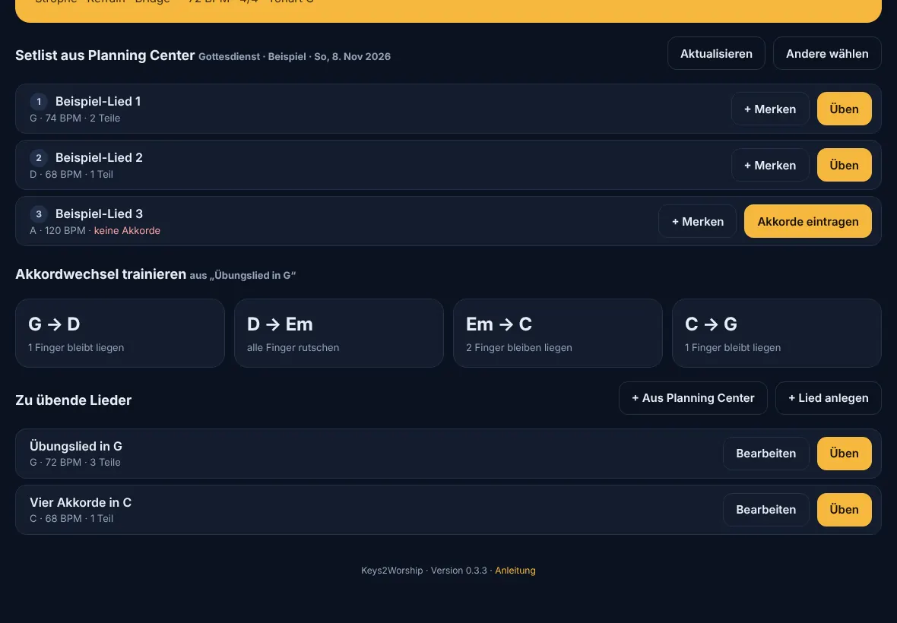
Nachschlagen
Akkord-Bibliothek
Startseite → Akkorde. Grundton und Akkordart wählen – du siehst jeden Akkord in allen drei Lagen (Grundstellung, 1. und 2. Umkehrung) mit Fingersatz und kannst ihn anhören.
Wo die Lücke zwischen zwei Tönen größer ist, bleibt ein Finger frei: große Lücke oben → 1 – 2 – 5, große Lücke unten → 1 – 3 – 5.
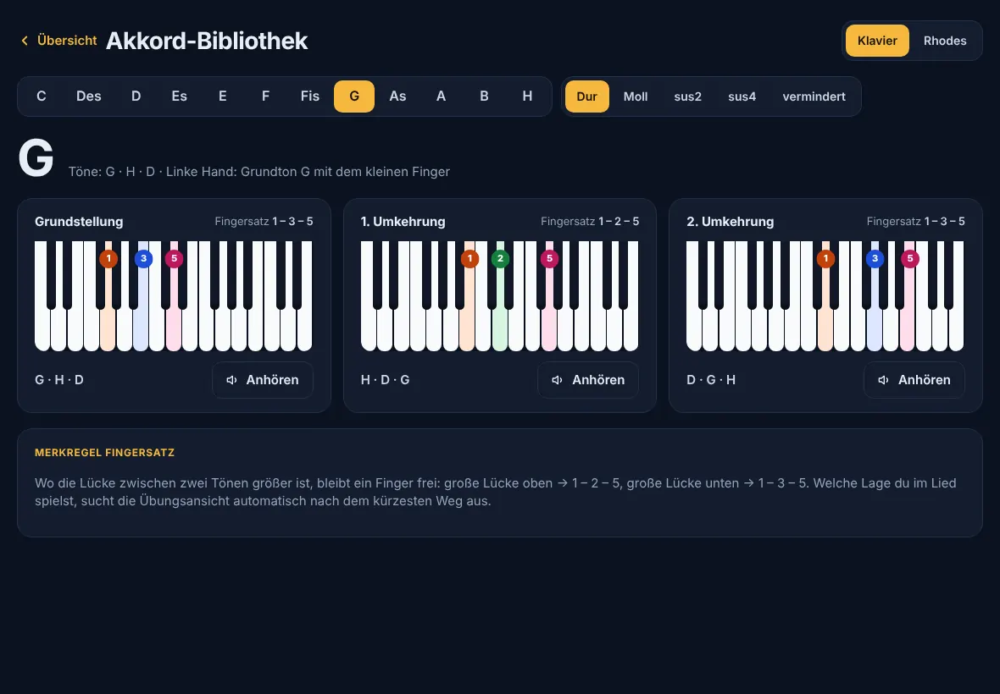
Zum Schluss
Einstellungen & iPhone
| ⚙︎ Menüpunkt | Was du dort einstellst |
|---|---|
| Planning Center | Verbinden, Setlist laden, Lieder holen, trennen. |
| Klaviatur | Ansicht beim Öffnen, Zoom zurücksetzen, echte Größe kalibrieren. |
| Metronom & Gleiten | Wie früh die Finger zum nächsten Akkord gleiten. |
| Klang | Klavier, Rhodes oder aus; Lautstärke. |
| Notenschrift | Deutsch (H, Fis) oder Englisch (B, F#). |
| App & Speicher | Version, Ton-Status, nach Update suchen. |
Funktioniert quer gehalten genauso. Weil der Bildschirm schmaler ist, stellt sich die Klaviatur auf ca. 70 % ein, damit ein ganzer Akkordwechsel ins Bild passt.
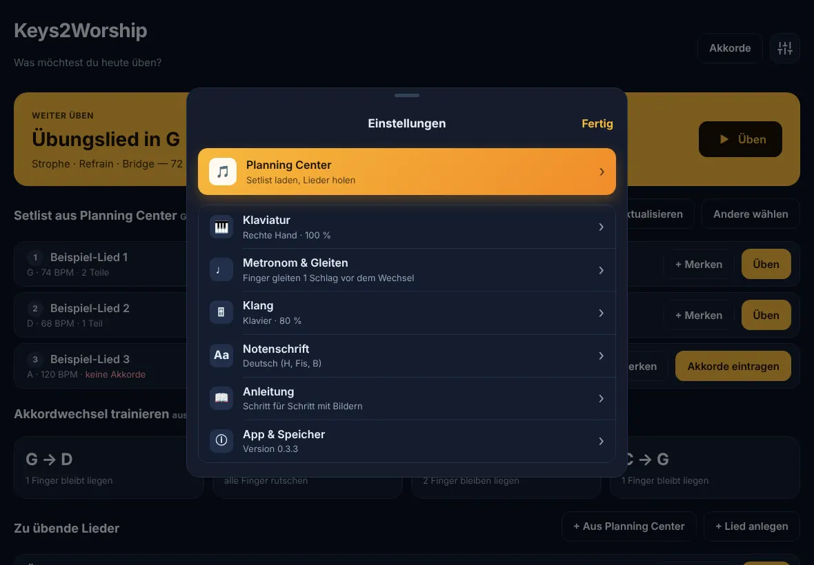
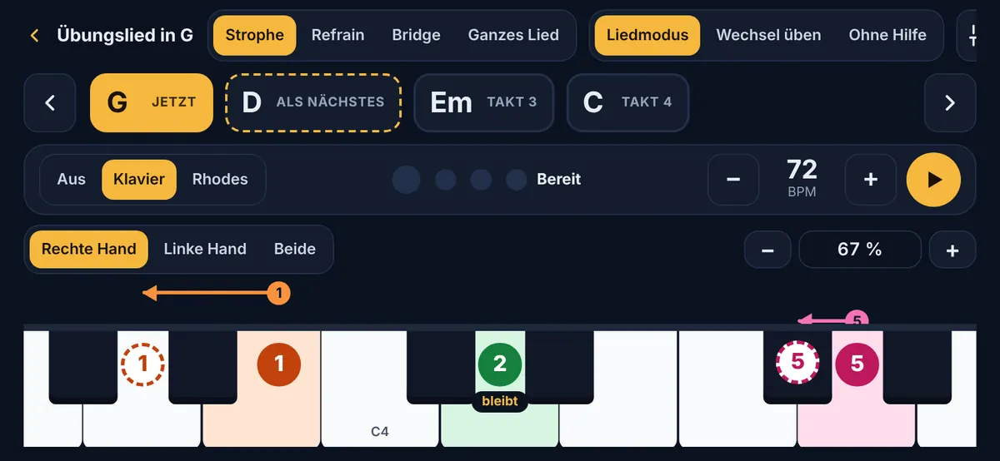